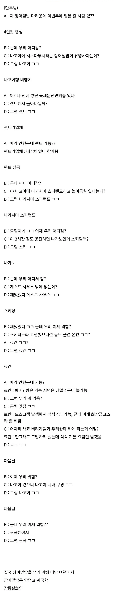

T들은 개빡치는 P의 현실
댓글
저렇게 누군가 제시했을때 아무 불만없이 같이 따라가면 진짜 잘맞는 P들임 ㅋㅋ
나고야 히츠마부시 ㅈㄴ 맛있는데 손해보셧네
저거 요즘은 불가능함 료칸 숙박만 구하는것도 예약 한두달은 밀림
재밌게 놀고왔네
같은 성향 사람들끼리 가야되는 듯
나는 못 버팀ㅋㅋ

저렇게 누군가 제시했을때 아무 불만없이 같이 따라가면 진짜 잘맞는 P들임 ㅋㅋ
나고야 히츠마부시 ㅈㄴ 맛있는데 손해보셧네
저거 요즘은 불가능함 료칸 숙박만 구하는것도 예약 한두달은 밀림
재밌게 놀고왔네
같은 성향 사람들끼리 가야되는 듯
나는 못 버팀ㅋㅋ
내가 극 P 이긴 한데, 계획을 짜긴 함.
근데 계획짜는 목적이 관광 마일스톤들을 챙기기 위해서가 아니라 같이가는 사람들이 즐기기 위한 마스터플랜에 가까움.
어차피 여행은 통제되지 않는 변수가 나오는 법인데 계획을 우선하고 통제하려 마음먹으면 여행이 스트레스가 됨.
차라리 변수를 통제할 생각은 버리고 문제를 해결하는걸 즐기는 마음을 가지는게 더 나음.